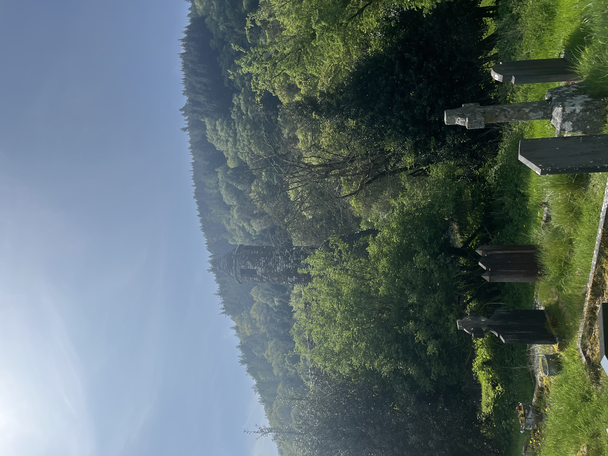
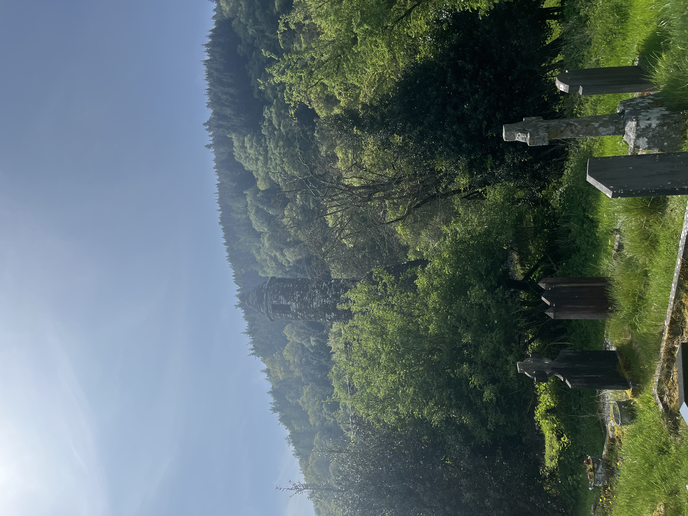
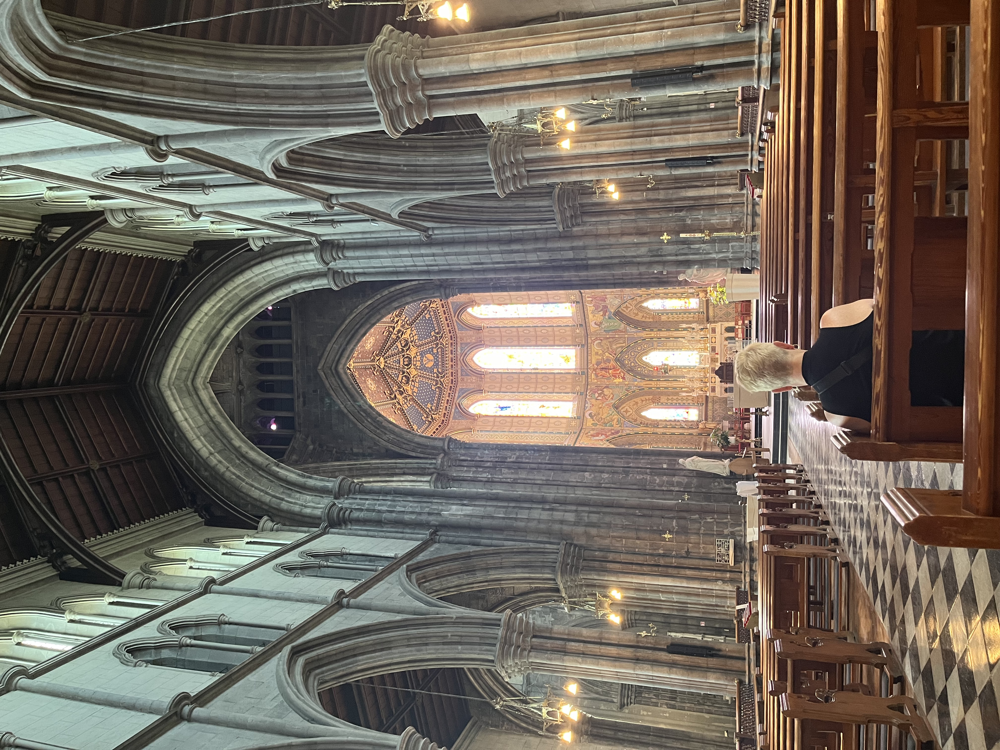
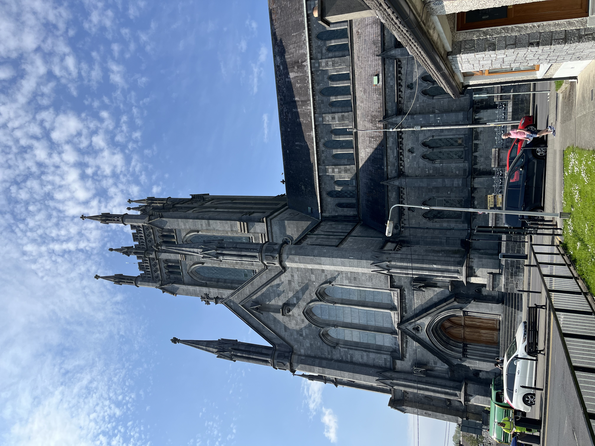
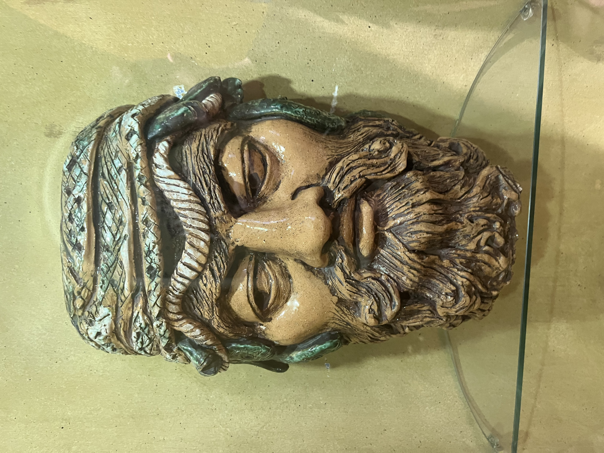
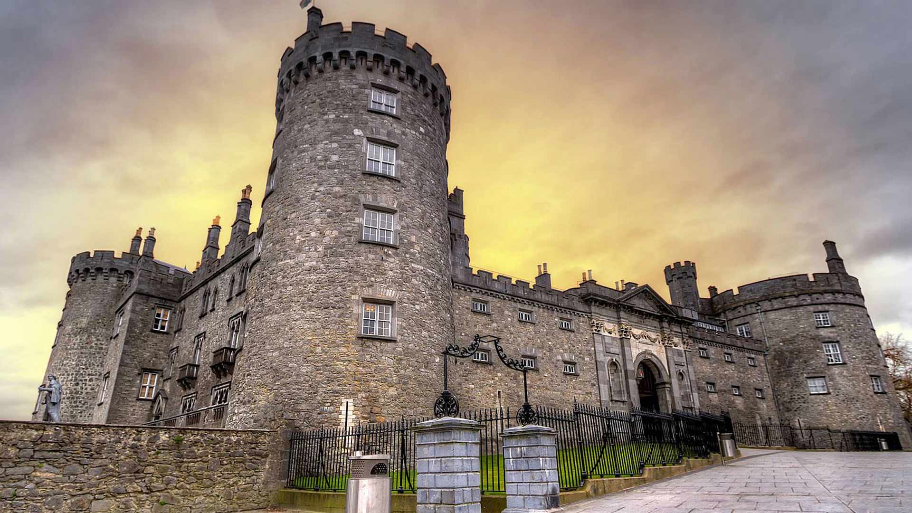
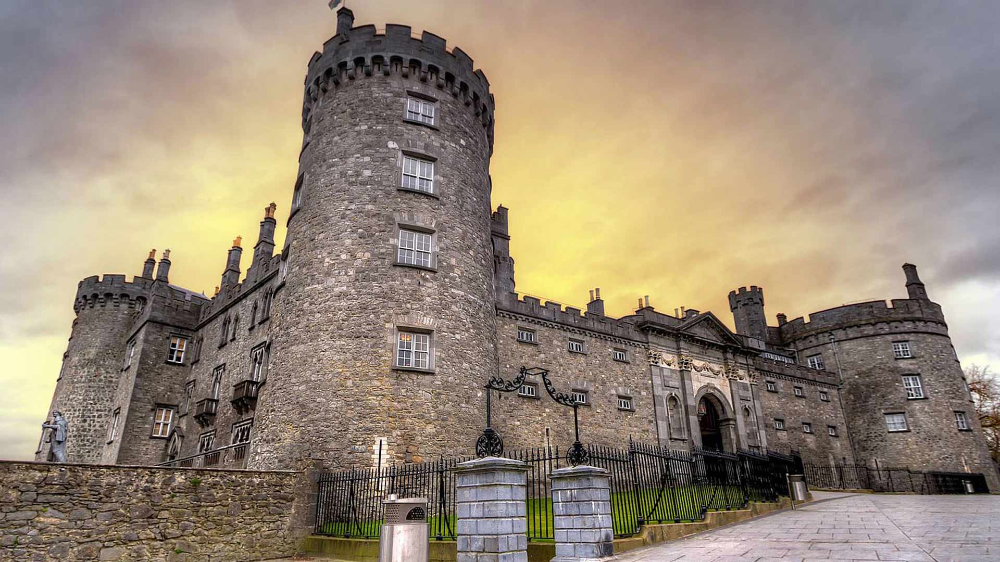

Trip to Glendalough and Kilkenny
Description via heritageireland
In a stunning glaciated valley in County Wicklow, in the sixth century, one of Ireland’s most revered saints founded a monastery. The foundation of St Kevin at Glendalough became one of the most famous religious centres in Europe.
The remains of this ‘Monastic City’, which are dotted across the glen, include a superb round tower, numerous medieval stone churches and some decorated crosses. Of particular note is St Kevin’s Bed, a small man-made cave in the cliff face above the Upper Lake. It is said that St Kevin lived and prayed there, but it may actually be a prehistoric burial place that far predates him.
Learn all about this hallowed place in the fine interpretive centre before exploring the site for yourself. If you do, you will be rewarded with spectacular views of the two lakes and a uniquely spiritual atmosphere.
Information from heritageireland

 



Kilkenny
Few buildings in Ireland can boast a longer history of continuous occupation than Kilkenny Castle. Founded soon after the Norman conquest of Ireland, the Castle has been rebuilt, extended and adapted to suit changing circumstances and uses over a period of 800 years.
Today, Kilkenny Castle is open to visitors all year round and is largely a Victorian remodelling of the thirteenth century defensive Castle. Each year, hundreds of thousands of visitors come to see this grand country house and walk through its fifty acres of rolling parkland with mature trees and an abundance of wildlife. Information via kilkennycastle
   
